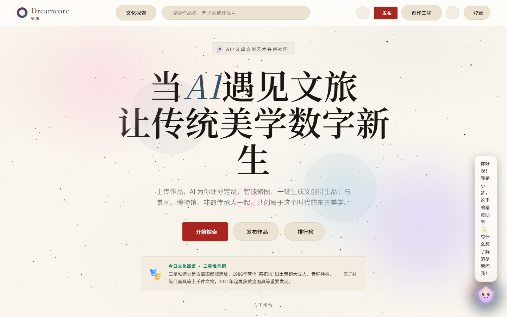
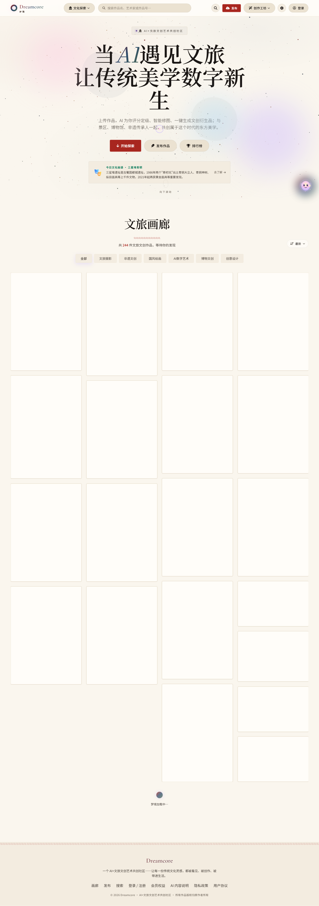
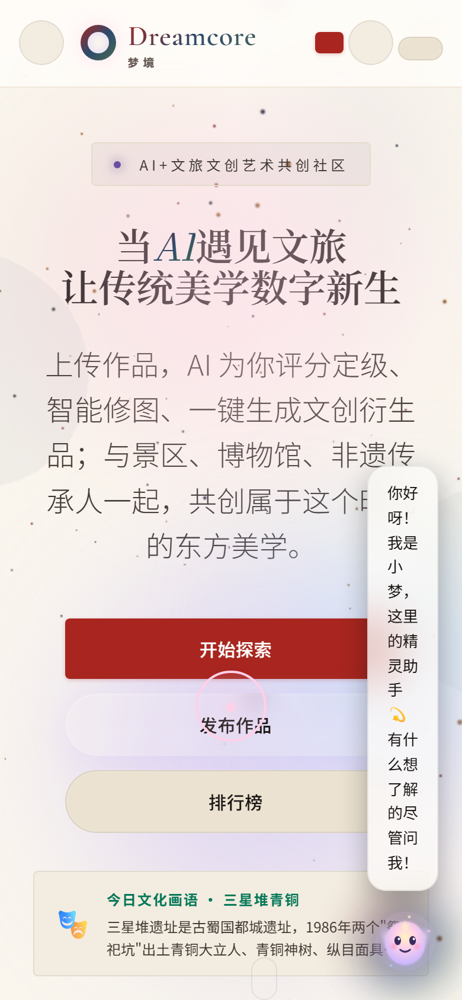
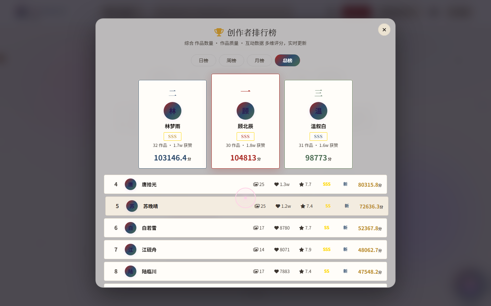
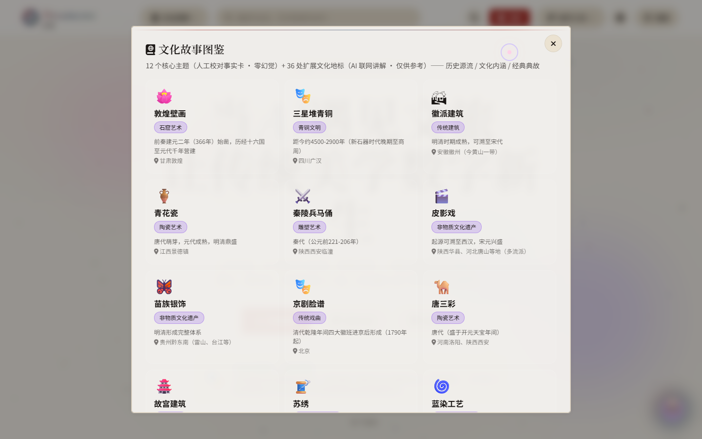
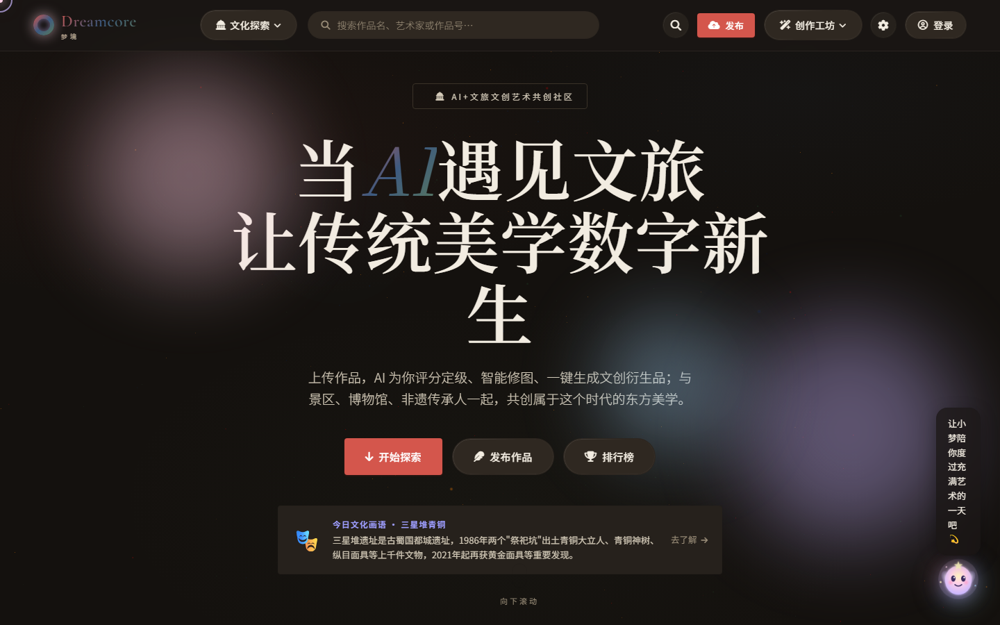

UI EVALUATION REPORT · 产品级验收
Dreamcore「墨韵丹青 2.0」
UI 优化效果评估报告
基于上一轮优化实施后的真实页面渲染，对标商业落地成熟产品标准进行五维量化验收
评估对象：http://localhost:5173
评估日期：2026-10-16
测试视口：1440×900 桌面 / 390×844 移动
覆盖页面：首页 · 画廊 · 排行榜 · 工作台 · 文化图鉴（浅/深双主题）
性质：只读评估，未修改任何代码
6.5/10
综合评分
风格成立 · 未达商用交付线
总评：墨韵丹青的设计语言骨架已经成立——宣纸底色、宋体标题、朱砂主色、印章奖牌、回纹页脚在桌面端形成了可辨识的东方美学气质，色彩对比度全部达到 WCAG AAA。但本轮验收在「最后一公里」发现 3 个 P0 级商用阻断问题：移动端导航结构崩坏、AI 助手「小梦」浮标在桌面与移动端均遮挡核心内容（上一轮移动端头像化方案因 CSS 选择器失配而未生效）、画廊全部作品图依赖 picsum.photos 外链导致离线/弱网下整屏白卡。另存在 Hero 标题孤字断行、紫调光斑残留、弹窗圆角体系冲突等 5 个 P1 问题。结论：当前完成度适合内部演示，距离可直接商业落地的成熟产品标准（8.5+）尚需一轮收口。
维度一 · 整体 UI 界面呈现效果
首屏印象、完整页面的完成度与「设计稿→实物」还原度 · 权重 20%

证据 1-1 ｜ 桌面 1440 首屏：宣纸底 + 宋体巨标题 + 朱砂 CTA 的东方气质成立；但右侧有明显粉紫/蓝紫光斑，标题末字「生」孤字换行，小梦气泡文字竖排。
表现良好的部分
- 桌面首屏气质统一：
#faf6ee 宣纸底、Noto Serif SC 96px 宋体标题、朱砂 #a8261f 主按钮，品牌第一眼可辨识；
- 深浅双主题均可用，深色墨底
#14110e + 熟宣字的「夜间展卷」氛围优于多数同类产品；
- 导航半透纸毛玻璃（85% 不透明度 + 8px blur）克制不抢戏。
拉低呈现完成度的问题
- 画廊 20 张作品图全部加载失败，首屏以下是一片白色矩形阵列（见证据 1-2），页面中后段视觉重量完全塌陷——这是当前对「整体呈现」伤害最大的问题；
- 移动端首屏导航元素互相重叠、按钮文字消失（见证据 1-3），完成度仅 4 分水平；
- 小梦浮标的粉紫卡通精灵与墨韵丹青体系在同一屏内气质冲突。

证据 1-2 ｜ 首页全页（4088px）：Hero 区以下约 65% 的视域为空白卡片网格，瀑布流在无图状态下不产生任何视觉节奏；页脚回纹分隔带正常。

证据 1-3 ｜ 移动 390 首屏：顶部 logo / 发布钮 / 头像占位互相挤压重叠，「发布」文字被裁成红块；右侧小梦气泡竖排并压住正文与 CTA 区。
维度二 · 视觉设计规范与一致性
色彩令牌、字体阶梯、圆角、图标、组件状态的体系化程度 · 权重 20%
规范化亮点（达到商业产品水准）
- 色彩令牌化完整：浅/深双主题
--bg / --accent / --border / --text 全部经 CSS 变量驱动，全站禁用色扫描（紫 #8e44ad、鎏金 #fbbf24/#ffd700）计算样式 0 命中；
- 可访问性优秀：正文/底色对比度 16.67:1、白字/朱砂 7.09:1，均超 WCAG AAA（7:1）；
- 字体阶梯清晰：96 / 52 / 16px 三级，宋体标题 + 黑体正文分工明确，正文行高 1.6 阅读舒适；
- 印章奖牌体系落地准确：排行榜「一/二/三」汉字奖牌 DOM 实测无 emoji 泄漏，冠/亚/季三色（朱砂/赭金/黛青）与设计方案一致。
体系破口（一致性扣分区）
- 圆角体系冲突：全站令牌
--radius: 4px，但排行榜、图鉴、欢迎引导三个 Modal 容器均为约 16–20px 大圆角（见证据 2-1/2-2），同一屏内「卡片 4px + 弹窗 20px」语言分裂；
- 紫色残留转移到组件内部：文化图鉴的分类 chip 仍是淡紫底紫字（证据 2-2「石窟艺术 / 青铜文明」），小梦精灵 SVG 渐变硬编码
#ffd1e8→#c9b6ff 粉紫色（js/ai-tutor.js L496-506），CSS 变量层管不到；
- 图标体系三套并存：FontAwesome 线性图标（导航/按钮）+ emoji 彩绘（图鉴 12 个主题、今日卡片 🎭、排行榜 🏆）+ 自定义 SVG（小梦），跨平台渲染与精致度不一致；
- 移动端 CTA 按钮被既有样式覆盖为全宽胶囊（证据 1-3），与 4px 令牌矛盾。

证据 2-1 ｜ 排行榜 Modal：外层容器约 20px 大圆角，内部领奖台卡片 4px；印章「二/一/三」识别度偏弱（「二」形似等号）；标题左侧金色 🏆 emoji 与矿物色系不协调；粉色圆环为小梦元素穿透到弹窗上层（z-index 破口）。

证据 2-2 ｜ 文化图鉴：3 列网格与留白规范，但 12 个主题全部使用 emoji 图标，分类 chip 为旧紫调色板，与墨韵丹青令牌脱节。
维度三 · 美学创意与视觉吸引力
东方美学表达、创意记忆点、情绪感染力 · 权重 20%
创意加分项
- 印章化等级系统是全站最高记忆点：朱砂「一」、赭金「二」、黛青「三」取代西式金/银/铜牌，文化转译准确；
- 页脚回纹分隔带、标题宋体的选用、宣纸纤维肌理（2.5% 噪点）体现了对「克制的东方感」的理解，没有堆砌龙凤祥云；
- 深色主题下标题墨韵浓淡处理（证据 3-1）具备博物馆数字展陈的高级感。
创意扣分项
- P1 排版硬伤：主标题断为「当 AI 遇见文旅 / 让传统美学数字新 / 生」，末字孤悬（中文排版大忌「孤字成行」），商业官网上线前必须修正；
- 氛围光斑仍是旧梦核语言：Hero 右下方大面积粉紫 + 蓝紫 radial-gradient 光晕（证据 1-1 右侧），与「矿物色 + 宣纸」的克制气质冲突，是当前最显眼的色彩不和谐源；
- 粒子背景的彩色小点（红/蓝/绿/金）在宣纸上近似「洒了彩屑」，建议降饱和或改为墨点+朱砂点两级；
- 白卡阵列使画廊区毫无吸引力——文创社区的核心视觉资产是作品图本身，无图时缺少国风降级占位（如水墨晕染底 + 题名篆印）。

证据 3-1 ｜ 深色主题：墨底 + 熟宣宋体的展陈感是全站美学最高点；但蓝紫光斑、孤字、竖排气泡三个问题在深色下同样存在。
维度四 · 按钮及交互元素布局合理性
信息架构、点击命中、状态反馈、层级与防误触 · 权重 20%（本轮最低分）
达标项
- 桌面 Hero 三按钮主次明确：朱砂实心「开始探索」+ 两个描边次按钮，间距 16px 均衡；
- 排行榜 Tab（日/周/月/总榜）选中态用朱砂渐变填充，状态清晰；
- 筛选 chip 横排、选中态明确，桌面端无横向溢出（实测 scrollWidth = clientWidth）。
阻断性问题（量化）
- 移动端触控目标不达标：56 个可见按钮中 37 个高度 < 44px，最小仅 18px，违反 WCAG 2.5.5 与 Apple HIG（44pt）/ Material（48dp）触控目标规范；
- 移动端导航缺失折叠策略：390px 下仍平铺搜索框 + 发布 + 创作工坊 + 设置 + 登录 + 两个头像位，元素互相覆盖，无汉堡菜单；
- 小梦浮标遮挡：桌面端竖排气泡压住正文与「今日文化画语」卡片右缘；移动端气泡直接压住 CTA 与正文。根因已定位：浮标真实类名为
.ai-fab / #ai-fab（js/ai-tutor.js L487-488），气泡为 .ai-proactive-bubble（L1779），上一轮移动端头像化 CSS 的选择器（#tutor-float / .tutor-float-wrap 等）与真实 DOM 全部失配，故未生效；
- 层级穿透：排行榜/图鉴 Modal 打开时，小梦的粉色拖把手环仍浮在弹窗内容之上（证据 2-1/2-2 右上区域）；
- 弹窗内容超屏：排行榜 Modal 第 8 名以下直接被视口底边裁切，未见内部滚动容器或收尾留白。
维度五 · 页面元素的空间分配与视觉平衡
栅格、留白、对齐、视觉重量分布与响应式 · 权重 20%
布局基本功
- 桌面画廊 4 列瀑布流（卡片 320×442，间距统一）、图鉴 3 列网格、排行榜三领奖台居中对称，栅格意识成熟；
- Hero 内容水平居中（标题容器 x=290 / 宽 860），CTA 组与每日卡片居中对齐，轴线稳定；
- 全页无横向溢出（桌面/390px 实测均 false）。
失衡点
- 视觉重量断层：Hero（高饱和大标题）→ 白卡阵列（零重量）→ 深色页脚，三段重量不连续，滚动节奏在画廊区「断气」；
- 标题居中多行时因孤字导致视觉重心偏左；描述段在 390px 下左右边距过小且被气泡遮挡；
- 排行榜分数列小数位不统一（
103146.4 / 104813 / 80315.8）且非等宽数字，右边缘参差，应启用 font-variant-numeric: tabular-nums 并统一精度；
- 导航 16 个可交互元素挤在 74px 高的单条内，搜索框与两组按钮争夺水平空间，桌面端已显拥挤。
量化指标实测总表
数据由 Playwright（Chromium / Edge 同 Blink 内核）在真实渲染后读取 getComputedStyle 与 getBoundingClientRect 获得
| 指标 | 实测值 | 标准/期望 | 判定 |
|---|
| 正文 / 底色对比度（浅） | 16.67:1 | WCAG AAA ≥ 7:1 | PASS |
| 白字 / 朱砂按钮对比度 | 7.09:1 | WCAG AAA ≥ 7:1 | PASS |
| 紫调/鎏金禁用色（计算样式扫描） | 0 命中 | 0 | PASS |
| 排行榜 emoji 奖牌泄漏 | null（汉字一/二/三） | 0 | PASS |
| 横向溢出（桌面 / 390px） | 无 / 无 | 无 | PASS |
| 移动端 h1 字号 | 32px（断点 ≤480px） | ≤ 40px | PASS |
| Hero 标题断行 | 3 行，「生」孤字 | 意群完整断行 | FAIL |
| 画廊作品图加载 | 0/20（picsum.photos 外链） | 20/20 或本地兜底 | FAIL |
| 移动端按钮 <44px 数量 | 37 / 56 | 0（触控目标 ≥44px） | FAIL |
| 移动端导航折叠 | 无汉堡菜单，元素重叠 | ≤768px 折叠抽屉 | FAIL |
| 小梦浮标响应式收合 | 未生效（CSS 选择器失配） | ≤520px 收为 44px 圆钮 | FAIL |
| Modal 圆角 vs 全站令牌 | ~20px vs 4px | 统一（建议 ≤8px） | WARN |
| 小梦元素 z-index 穿透 Modal | 存在（粉环压弹窗） | 弹窗打开时隐藏/降层 | FAIL |
| 首页文档高度 / 导航元素数 | 4088px / 16 | — | INFO |
问题清单（按优先级）
P0 = 商用阻断，3 项 ｜ P1 = 明显体验损伤，5 项 ｜ P2 = 精修项，5 项
E-01P0移动端导航结构崩坏（无折叠菜单）
390px 视口下 logo、发布按钮、两个头像位、创作工坊、登录平铺挤压，红钮文字被裁切。
- 证据
- eval-08-mobile-hero.png 顶部区域
- 定位
index.html #navbar 响应式分支；项目已有 .sc-drawer 抽屉组件可复用- 标准
- Material / iOS HIG：≤768px 主导航折叠为汉堡菜单
E-02P0小梦浮标气泡竖排、遮挡正文与 CTA（桌面+移动）
气泡宽度塌缩导致中文逐字竖排；移动端直接压住「开始探索」按钮。上一轮 §12 头像化 CSS 选择器（
#tutor-float/.tutor-float-wrap/.ai-tutor-float）与真实 DOM 不匹配。
- 根因定位
- 容器
.ai-fab / #ai-fab（js/ai-tutor.js L487-488）；气泡 .ai-proactive-bubble（L1779）/ .ai-reaction-bubble（L1758）；精灵粉紫渐变 #ffd1e8→#c9b6ff（L496-506）
- 证据
- eval-01 / eval-07 / eval-08 右侧均可见
E-03P0画廊作品图 100% 外链依赖，弱网/离线下整屏白卡
20 张首屏卡片实测 0 张渲染成功；种子图取自
picsum.photos/seed/（js/gallery.js 多处 URL 处理）。竞赛演示现场若无稳定外网，画廊——平台核心页面——将呈现为白色矩形阵列。
- 证据
- eval-02-home-full.png / eval-08-mobile-full.png
- 建议方向
- ① 种子图本地化入仓（建议 ≤30KB/张 WebP，控制包体）；② 或实现
onerror 国风占位兜底（矿物色渐变 + 题名 + 篆印），保证任何网络条件下视觉不塌
E-04P1Hero 主标题孤字成行（「生」）
意群断行应为「当 AI 遇见文旅／让传统美学数字新生」。建议容器 max-width 收窄至 820px 并在「文旅」后语义断行（<br>），或用 text-wrap: balance 配合手动断点；移动端两行排布。
E-05P1Hero 粉紫/蓝紫光斑与小梦粉紫发光残留
光斑为 CSS radial-gradient 旧梦核渐变，未走令牌；应替换为已定义的 --bg-glow-1/2/3（朱砂 6% / 黛青 5% / 石绿 5%）；小梦 SVG 渐变同步 token 化。
E-06P1Modal 大圆角与全站 4px 体系冲突
排行榜/图鉴/欢迎弹窗约 16–20px 圆角。建议新增 --radius-modal: 8px 作为上限并统一三类弹窗；移动端可维持 4px。
E-07P1移动端 37 个触控目标 <44px
最小按钮高度 18px。建议 ≤768px 全局交互元素 min-height: 44px（图标钮 44×44），行内文字链除外。
E-08P1小梦浮标 z-index 穿透 Modal
弹窗打开时 .ai-fab 及其拖把手环仍覆盖弹窗内容。建议监听 Modal 打开态，为 body 加 .modal-open 类隐藏浮标，或在层级规范中明确浮标 < 遮罩 < 弹窗。
E-09P2图鉴分类 chip 仍为旧紫调色板
将 .trace-chip / .ca-card-cat 紫色改为黛青淡底（参考 --indigo-accent 12% 混色）。
E-10P2emoji 图标跨平台不一致（图鉴/🏆/今日卡）
沿用既定方案新增 js/icons.js：12 枚文化主题线性 SVG 图标（单色 currentColor，≤4KB），奖杯改 FontAwesome 描金或印章 SVG。
E-11P2排行榜分数小数位不齐、非等宽数字
统一 toFixed(1) + font-variant-numeric: tabular-nums。
E-12P2移动端 CTA 被覆盖为全宽胶囊
排查移动端按钮样式优先级，统一回 --radius: 4px。
E-13P2桌面导航信息密度偏高（16 个元素）
「文化探索 / 创作工坊」下拉与登录、头像、设置可归并为右侧一组图标钮，搜索框保留主导。
优化方向与落地路线建议
以下为方案建议（本轮不执行代码修改），按「演示保障优先 → 体系收口 → 精修」三阶段排列
阶段一 · 演示安全线（建议优先，约 1 轮）
消除 3 个 P0
- 小梦浮标：用真实类名
.ai-fab/.ai-proactive-bubble 重写响应式规则——≤520px 收为 44×44 圆钮、气泡改点击展开的横排 toast；桌面气泡加宽至 ≥220px 修复竖排；精灵渐变换朱砂/黛青 token；Modal 打开时隐藏。
- 图片容灾：给画廊图片加
onerror 国风占位（成本最低、当天可完成），有时间再做种子图本地化。
- 移动导航：复用
.sc-drawer 抽屉，≤768px 仅保留 logo + 汉堡钮 + 发布主钮。
阶段二 · 体系收口（约 1 轮）
消灭 P1 与一致性破口
- 标题断行：容器收窄 + 语义断点，消除孤字；
- 光斑 token 化：Hero radial-gradient 全部改用
--bg-glow-*；
- 圆角令：新增
--radius-modal: 8px，三类弹窗统一；
- 触控规范：移动端
min-height:44px 全局兜底；
- 层级规范：浮标 < 遮罩 < 弹窗，body.modal-open 联动。
阶段三 · 精修加分（冲刺 8.5+）
P2 与体验质感
js/icons.js 12 枚文化 SVG 图标替换 emoji；- 图鉴 chip 去紫改黛青；分数 tabular-nums；
- 粒子降为「墨点 + 朱砂点」两级色板；
- 印章奖牌「二」加边框做方印造型，消除「等号」误读；
- 导航元素归并降噪。
验收标准（完成阶段一+二后复测）
量化通过线
- 断网刷新：画廊白卡率 = 0%（占位或本地图）；
- 390px：无重叠、无遮挡、<44px 按钮 = 0；
- 五弹窗圆角差 ≤4px；禁用色全站（含 SVG/emoji）0 残留；
- 预期评分：维度四 ≥ 8.0，综合 ≥ 8.5，达到商业交付线。
评估结论
「墨韵丹青 2.0」在 设计方向与令牌层已达到专业水准（对比度 AAA、印章体系、双主题、零禁用色计算残留），问题集中在设计系统向组件/响应式/容灾场景的「最后一公里」穿透：SVG 内联硬编码色、外链资源无兜底、真实 DOM 类名与覆盖层选择器失配、移动端导航未做信息架构降级。这 13 项问题均为已知明确根因、修复路径清晰的工程项，不涉及设计方向返工。建议优先执行阶段一（P0）保障演示与弱网可用性，完成阶段一、二后综合分预期可由 6.5 提升至 8.5+，进入商业可交付区间。